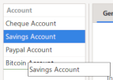

GTK has native support for accelerators and shortcuts.
ALT
In most window, you can focus a widget or a menu or a menu item after pressing the ALT key.
Pressing this key will reveal the key associated to an item with an underline. In earlier version of GTK the access key was always showed, but now you must
press the ALT key to show them. Then you can use arrow key, or press the same letter again to cycle for maybe same key used for several items.
CTRL
In most dialog with several input widget, pressing CTRL key with up/down key (or left/right) will enable to navigate through the dialog widget.
ESC
The ESC key usually close dialog, or abort menu display.
More information and other keys can be found in the Gnome HIG keyboard input
The column width of some of the listview (ledger, detail and upcoming) is saved to persist you preference within working session.
At any time you can adjust the width of the column from the header.
If you want to auto-size the column to its content, just double left click on the header right when you have the resize cursor <=>.
On every date widget, you can use some key combination to fast change the day, month or year
If you want to change the display order of your account in the main window list, you can do this from the account dialog. Just use drag & drop to re-order the accounts

HomeBank also manage automatic check numeration, this will occurs when several condition are satisfied.
A duplicate finder is available from a single account ledger window in the tools menu. The feature just mark in place the transaction, in bold for the one to keep and strike the potential duplicate called similar.
the similarity is evaluated on: amount, date (+gap).
Whenever you add a transaction, you can also create a new payee/category with seizing directly a new item into the payee/category widget.
For countries in the European area, or those using the Euro currency (EUR), HomeBank deliver some extra features to display to Euro major/minor, and also to convert if necessary. This covers the 2 situations:
Setting up the minor currency properties is done in the Preference dialog.
Once the settings are correctly set you can switch most of the displays to minor currency, minor can be Euro if your country is waiting a switch to euro, or the old former national currency if your country already switched to euro.
When the minor currency is activated, a minor toggle menu will appear in most windows.
Convert to Euro currencyFrom the account window, menu Tools/'Convert to euro', you are able to convert an entire account to the euro currency, according the settings you configured into the preferences.
This could also be used one day in the hypothesis a country will switch back to a national currency from euro currency, the rate configured in the euro preferences just need to be correct.